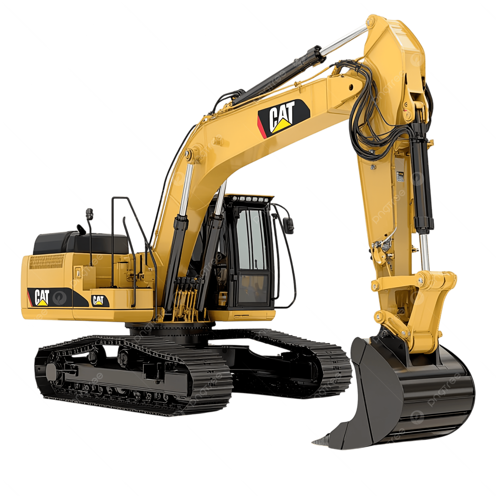
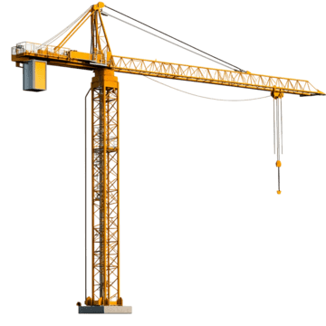
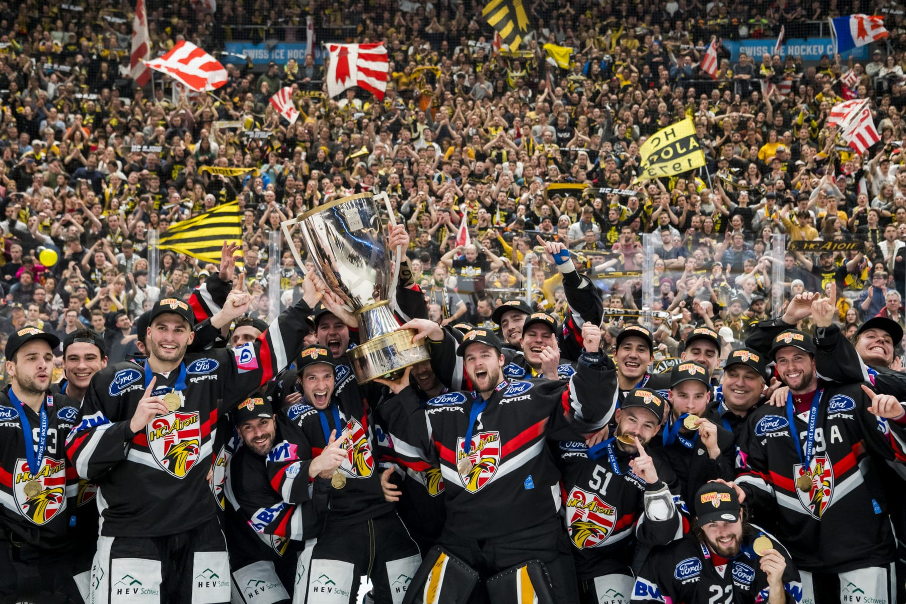
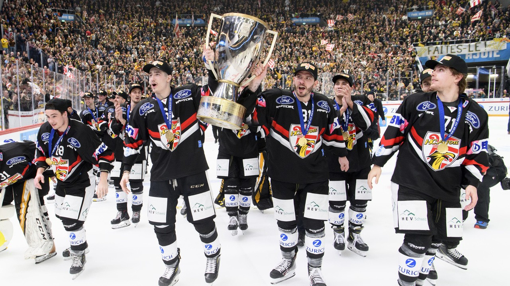
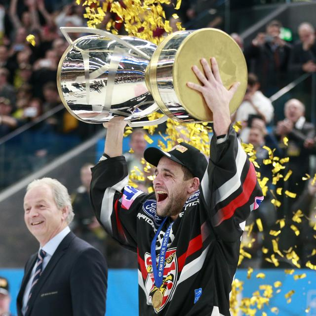

1973 Le Voyebœuf ouvre ses portes
Construite à Porrentruy, la patinoire couverte devient vite un lieu de rassemblement : les délégués du Rassemblement jurassien s'y réunissent encore en 1974.

Le chaudron, usé mais aimé
1er juillet 2018 — 2×OUI
Devenue vétuste et hors normes, l'enceinte reste pourtant chère aux Ajoulots. La population vote massivement le crédit de rénovation : une décision collective, pas un choix imposé.




2019–2020 — Le Voyebœuf disparaît
Pièce par pièce, l'ancienne structure est démontée pour laisser place au nouveau bâtiment. Ce qui existait depuis 1973 a vraiment disparu.
Coupe de Suisse · 2 février 2020
La finale, à Lausanne
Le Voyebœuf est en plein chantier : 2 500 places au lieu de 4 200. La fédération estime qu'il ne remplit pas les conditions d'une finale, qui se jouera à la Vaudoise Aréna de Lausanne.
Ajoie, club de deuxième division, y affronte Davos. Sur sa route, il a déjà sorti Lausanne, les ZSC Lions et Bienne.
On avait aucune pression : c'était une équipe de Ligue A, on était en Ligue B. On n'avait quasi aucune chance de gagner, on avait déjà fait le maximum.
Mais quand on est arrivé dans la patinoire, qui était que jaune et noire, là c'est monté, mais vraiment monté.
Vu que j'étais en première ligne, tu sais, les cinq, ils entrent sur la glace avec un enfant du sponsor. C'était Zurich Assurance.
J'croyais que le p'tit il tremblait parce qu'il avait peur. Je lui ai dit : « Mais c'est bon, ça va, allez, faut arrêter de trembler. »
Et il m'a répondu : « C'est pas moi qui tremble. »
À ce moment, je me suis dit : c'est bon, souffle, parce que sinon ça ne va jamais aller.
Ajoie 7 – 3 Davos
Première Coupe de Suisse de l'histoire du club.
En tant qu'hockeyeur, je souhaite à quelqu'un d'autre de vivre un truc comme ça.



5178 places. National League.
En 2022, la Raiffeisen Arena est inaugurée. Le pari collectif est réussi : le HC Ajoie est promu en National League.

Aujourd'hui, l'Ajoie joue à guichets fermés
Le HC Ajoie joue désormais à guichets fermés dans une arena moderne : le lieu a retrouvé — et dépassé — sa place dans la communauté.
Calendrier des matchs (site officiel du HC Ajoie, s'ouvre dans un nouvel onglet)